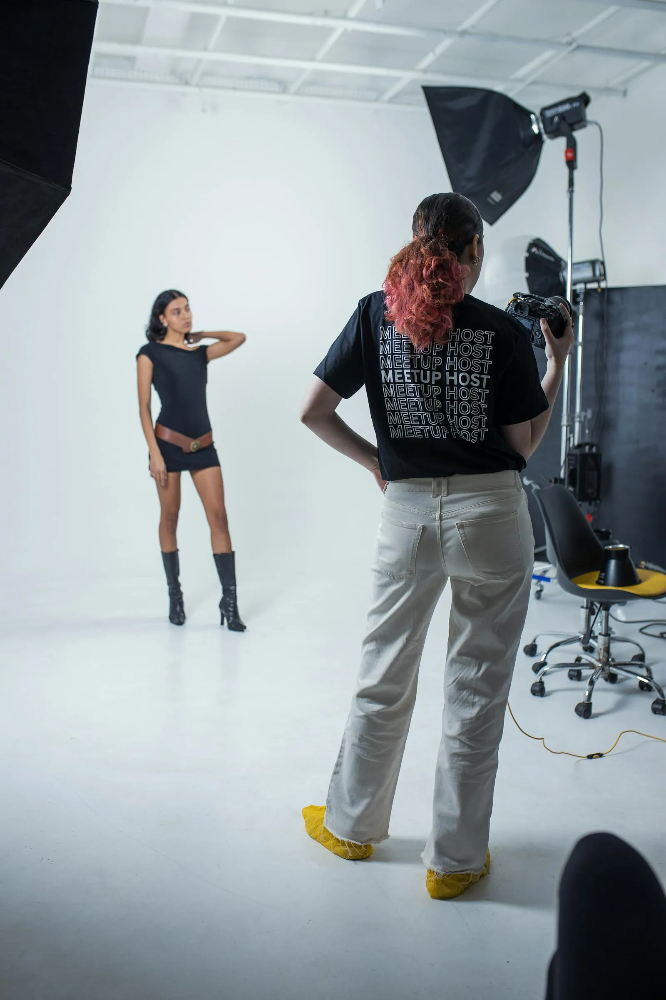

La mayoría de los estudios contrata a un retocador antes de contratar un flujo de trabajo con gestión de color. Eso está al revés. Un retocador solo puede arreglar lo que el archivo contiene; una tubería calibrada asegura que el archivo contenga lo que el cliente aprobó.
El error caro.
En 2018, un cliente de moda llegó con una campaña disparada por otro estudio. El lookbook ya había ido a imprenta. Los tonos de piel eran verdes. Los tejidos estaban desaturados. El punto negro se había aplastado. El cliente había pagado $40.000 por la sesión y $12.000 por el retoque. La reimpresión costó $18.000. La causa raíz no era el retocador — era que el estudio no tenía monitor calibrado, ni perfil de impresora, ni paso de pruebas. El retocador graduó sobre un iMac sin calibrar. La imprenta imprimió con su perfil interno. Nadie lo comprobó.
Qué significa realmente calibrar.
No es comprar un colorímetro. Es una cadena:
- Captura: cámara perfilada con un X-Rite ColorChecker Passport bajo la luz exacta de la sesión. Cada sesión. Cada localización.
- Monitor: serie Eizo CG, calibrada por hardware a D65, 120 cd/m², gamma 2.2, verificada semanalmente con un ColorMunki Display.
- Espacio de trabajo: Adobe RGB (1998) para captura, ProPhoto RGB para retoque, GRACoL2013 para entrega a imprenta.
- Pruebas: soft-proof en el monitor calibrado. Prueba física en el dispositivo de pruebas de contrato (Epson SureColor P20000 con SpectroProofer). El cliente firma la prueba física.
- Impresión: la imprenta recibe el TIFF etiquetado con GRACoL. Sin conversión de su lado.
El retocador gradúa lo que muestra el monitor. Si el monitor miente, el retocador miente.— Rosa Linder, Retocadora interna · desde 2017
La comparación de costos.
Presupuesto anual de calibración (estudio de 8)
- Colorímetro + espectrofotómetro$1.200 (amortizado a 3 años)
- Recalibración de monitores (semanal × 4 monitores)$0 (interno)
- Perfilado de impresoras (mensual × 2 impresoras)$2.400
- Material de pruebas (tinta + papel)$3.600
- Reemplazo anual de ColorChecker Passport$180
- Total$7.380 / año
Una reimpresión de un catálogo de 96 páginas: $12.000–$18.000. Un cliente perdido por problemas de color: incalculable. El presupuesto de calibración se paga solo si evita una reimpresión cada dos años. No hemos tenido una reimpresión relacionada con el color desde 2016.
Contratar primero a la imprenta.
Cuando incorporamos a un cliente nuevo para un compromiso de nivel Marque (temporada completa, impresión + digital), la primera reunión después del kickoff creativo es con la imprenta. No con el retocador. La imprenta nos dice: papel, límites de tinta, cobertura total de tinta, tiempo de secado, sustrato de pruebas. Construimos la tubería de color alrededor de las restricciones de la imprenta. El retocador luego trabaja dentro de un espacio de salida conocido y fijo.
Esto suena obvio. No es lo estándar. La mayoría de los estudios le entrega al retocador un brief y una fecha límite, luego envía los archivos a la imprenta y espera. La esperanza no es un flujo de trabajo.

La versión del estudio en solitario.
Si eres fotógrafo en solitario, no puedes pagar una impresora de pruebas. Sí puedes pagar:
- Un Eizo CG2420 de segunda mano ($800 en eBay)
- Un ColorMunki Display ($150 usado)
- Un ColorChecker Passport ($90)
- Una relación con un laboratorio local que haga una prueba de $25
Total: ~$1.100. Menos que un día de retoque. Te compra la confianza de que lo que ves es lo que recibe el cliente.
El cambio cultural.
La parte más difícil no es el hardware. Es la disciplina. Cada lunes, los primeros 30 minutos de la jornada del estudio son verificación de calibración. Sin excepciones. El productor sabe que no debe agendar llamadas antes de las 09:30. La retocadora sabe que los monitores están verificados antes de abrir un archivo. La imprenta sabe que recibirá TIFF etiquetados GRACoL, no "lo que sea que exportó el retocador".
Cuando entra un miembro nuevo al equipo, su primera semana se dedica a aprender la tubería de color — no la cámara, no la iluminación, no el retoque. La tubería. Porque si la tubería se rompe, nada de lo demás importa.
No hemos tenido una reimpresión relacionada con el color desde 2016. El presupuesto de calibración es el seguro más barato que compramos.— Mira Halden, Fundadora · Fotógrafa principal
La única pregunta.
La próxima vez que estés por contratar a un retocador, pregúntate: ¿el archivo que recibirá contiene realmente los colores que el cliente aprobó? Si la respuesta es "creo que sí" o "el retocador lo arreglará", contrata primero la calibración. El retocador te lo agradecerá. El cliente seguirá volviendo. La imprenta te enviará una tarjeta de Navidad.